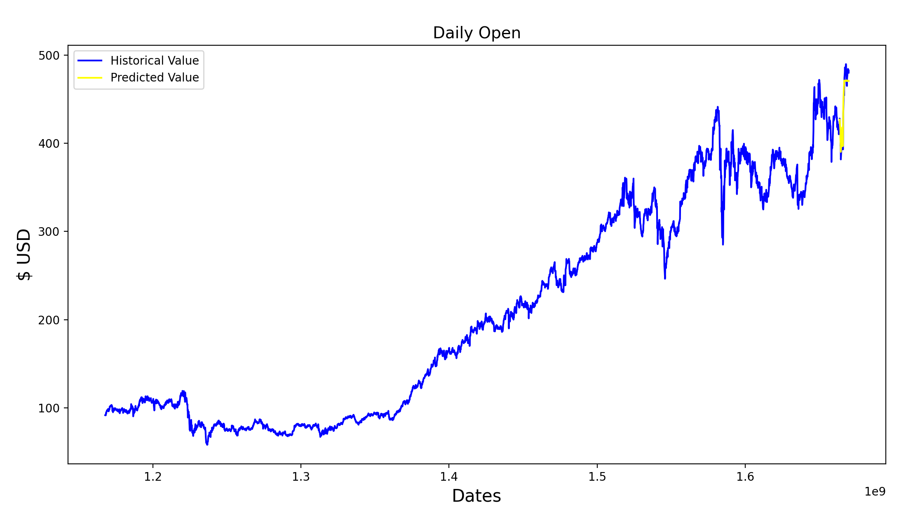
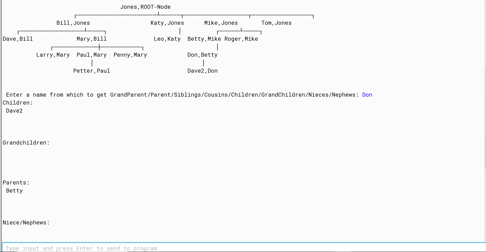
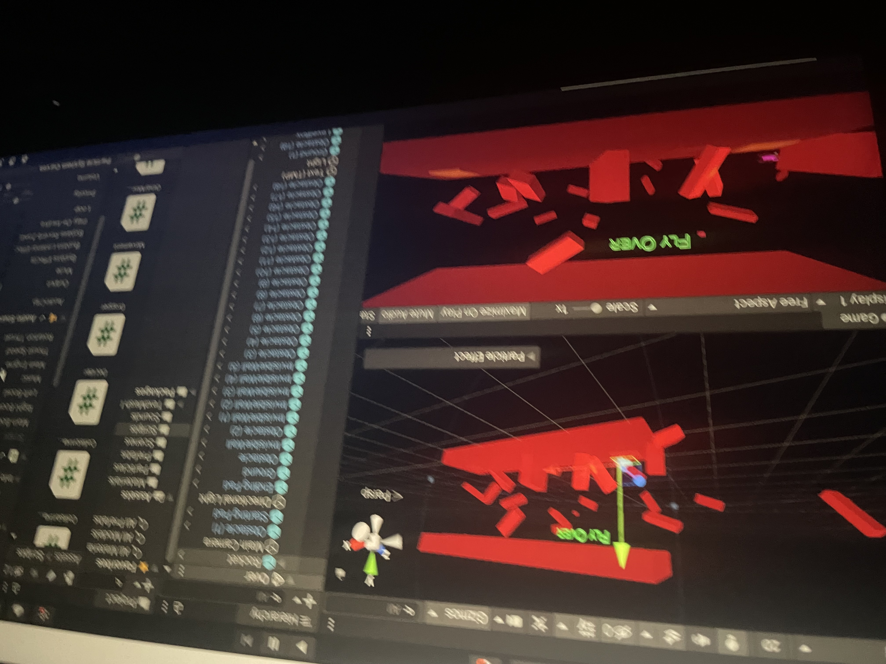

my projects
Machine Learning

my ml projects are the core of my creative and technical work. they reflect my curiosity, love for problem-solving, and drive to apply programming in real-world areas like finance and medicine.
Java

my java projects are some of my biggest and most challenging. built during my 200/300 level dual enrollment courses, they pushed my skills in collaboration, hand-tracing, and problem-solving. they focus on advanced data structures and algorithms like linked lists, binary trees, and hashsets.
Game Development

the games i’ve built are pure expressions of my creativity. whenever i’ve had a fun idea or noticed something missing in a game, making my own was how i brought those thoughts to life. each project was shaped by the tools and packages i had on hand, letting me design the kind of game i’d want to play.